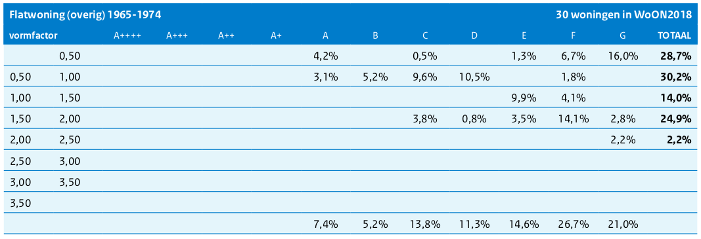
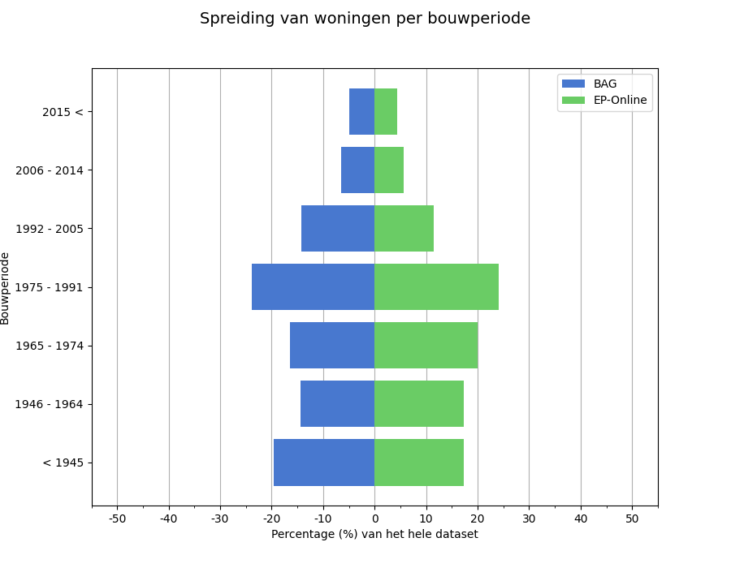
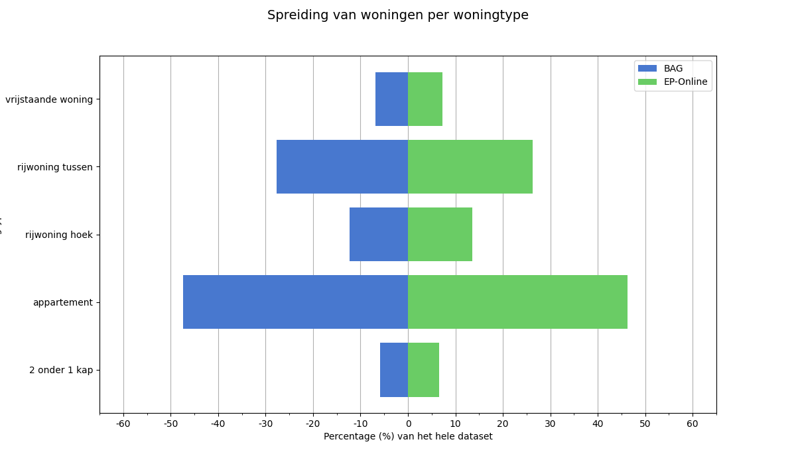
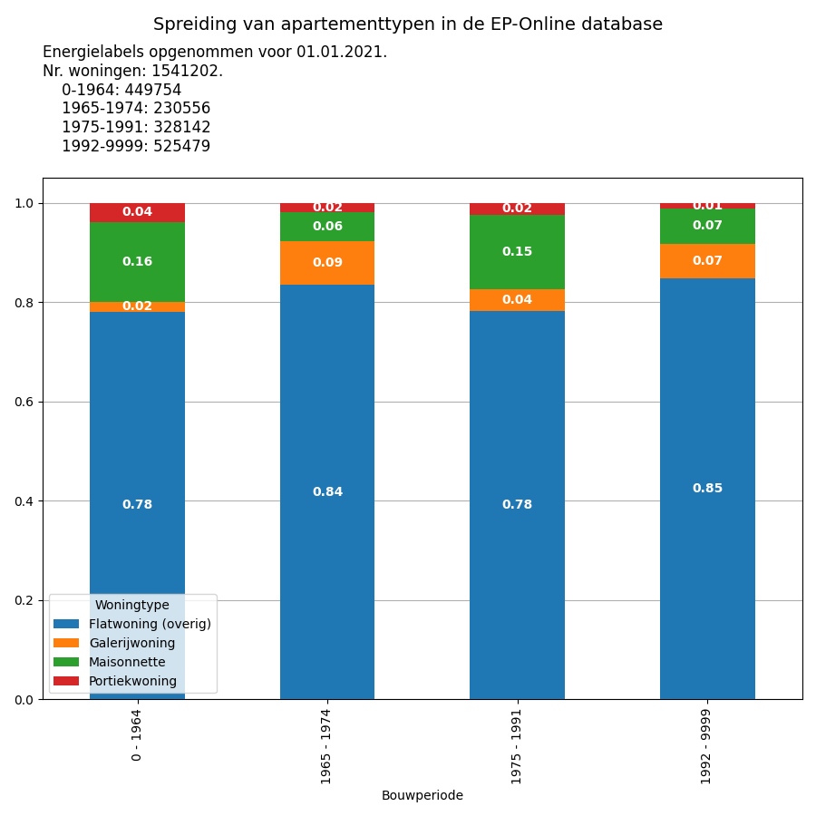
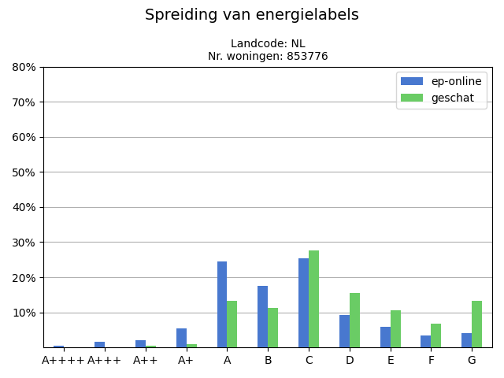
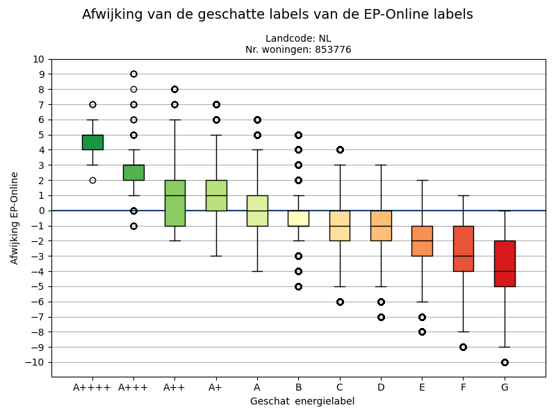

| Woningtype | 2 onder 1 kap | galerij | maisonnette | overig | portiek | rijwoning hoek | rijwoning tussen | vrijstaande woning | Totaal |
|---|---|---|---|---|---|---|---|---|---|
| Bouwperiode | |||||||||
| < 1945 | 24967 (0%) | 123940 (2%) | 312817 (4%) | 461724 (6%) | |||||
| < 1964 | 305248 (4%) | 20477 (0%) | 164052 (2%) | 794785 (10%) | 415500 (5%) | 1700062 (22%) | |||
| 1946 - 1964 | 15829 (0%) | 156230 (2%) | 294713 (4%) | 466772 (6%) | |||||
| 1965 - 1974 | 98318 (1%) | 36944 (0%) | 24698 (0%) | 344883 (4%) | 8039 (0%) | 210432 (3%) | 423536 (5%) | 124890 (2%) | 1271740 (16%) |
| 1975 - 1991 | 118700 (2%) | 22547 (0%) | 84600 (1%) | 438429 (6%) | 11145 (0%) | 305651 (4%) | 686056 (9%) | 179275 (2%) | 1846403 (24%) |
| 1992 - 2005 | 96500 (1%) | 122862 (2%) | 346410 (4%) | 176866 (2%) | 742638 (10%) | ||||
| 2006 - 2014 | 35272 (0%) | 51665 (1%) | 131721 (2%) | 60275 (1%) | 278933 (4%) | ||||
| 2015 < | 35326 (0%) | 49348 (1%) | 102291 (1%) | 51428 (1%) | 238393 (3%) | ||||
| 1992 < | 51718 (1%) | 50961 (1%) | 620488 (8%) | 7235 (0%) | 730402 (9%) | ||||
| Totaal | 689364 (9%) | 131686 (2%) | 324311 (4%) | 2198585 (28%) | 67215 (1%) | 1020128 (13%) | 2297544 (30%) | 1008234 (13%) | 7737067 (100%) |
Energielabel schatting voor buurten op basis van Voorbeeldwoningen 2022
1 Samenvatting
De studie Voorbeeldwoningen 2022 (RVO (2022)) beschrijft de spreiding van energielabels per vormfactorbereik voor elk woningtype uit de WoON 2018 (Rijksoverheid (2018)) studie. De laatste release van de 3DBAG dataset (2023.10.08) levert de oppervlakten die nodig zijn om de vormfactor voor een Pand te berekenen. Dit werk onderzoekt de mogelijkheid om de vormfactor voor elke woning binnen een Pand te berekenen, daarop de energielabelverdelingen van de Voorbeeldwoningen 2022 (RVO (2022)) studie toe te passen om vervolgens de energielabelverdeling van elke buurt van Nederland te schatten.
We valideren onze geschatte energielabels met de labels die zijn geregistreerd in de EP-Online (Rijksoverheid (2023)) database. De validatie toont een variërende afwijking tussen de geschatte en EP-Online (Rijksoverheid (2023)) labels. De labels A en B hebben een mediane afwijking van 0, de labels A+, A++ hebben een afwijking van +1, en de labels C, D een afwijking van -1. De rest van de labels heeft een afwijking van twee labels of meer van de EP-Online (Rijksoverheid (2023)) labels.
Er zijn twee belangrijke beperkingen die de betrouwbaarheid van onze resultaten beïnvloeden. Ten eerste is er geen brondata beschikbaar voor de driedimensionale opsplitsing van appartementen binnen een meergezinswoning. Er moeten daarom (sterke) aannames gedaan worden om toch tot de benodigde opsplitsing voor de subtypes van de appartementen te komen. De onzekerheid in deze schatting van deze subtypes heeft invloed op de schatting van de vormfactor en daarmee ook op het geschatte energielabel van appartementen. Ten tweede zijn de spreidingen van de energielabels in de studie Voorbeeldwoningen 2022 (RVO (2022)) onvolledig. Hierdoor kan het voorkomen dat voor bepaalde woningen, afhankelijk van het woningtype, de bouwperiode, en de berekende vormfactor, geen energielabel kan worden toegekend. Dit blijkt in onze landelijke studie het geval te zijn voor 14% van de woningen. Als we daarnaast kijken naar de EP-Online (Rijksoverheid (2023)) database, dan blijkt dat 32% van de EP-Online (Rijksoverheid (2023)) woningen in werkelijkheid een energielabel heeft dat op basis van de studie Voorbeeldwoningen 2022 (RVO (2022)) niet zou kunnen worden toegekend.
Dit project werd uitgevoerd door 3DGI en gefinancierd door de Rijksdienst voor Ondernemend Nederland.
Dit rapport en de geleverde data zijn vrij te kopiëren, te verspreiden en te veranderen onder naamsvermelding aan 3DGI, volgens de licentie CC-BY.
1.1 Geleverde documenten
- Dit rapport online, interactief: https://3dgi.github.io/wijklabels/report_nl.html
- Geproduceerde bestanden (zie omschrijving in Paragraaf 7): https://data.3dgi.xyz/wijklabels
- Broncode van de software voor het berekenen van de vormfactor en energielabels: https://github.com/3DGI/wijklabels
2 Gegevensbronnen
2.1 Spreiding van energielabels
De studie RVO (2022) geeft een representatieve steekproef van de spreiding van energielabels per woningtype en bouwperiode. Dit vormt de basis van onze methode om een energielabel toe te kennen aan een woning. De spreiding per woningtype en bouwperiode is tweedimensionaal, één dimensie is het energielabel, de tweede dimensie is de vormfactor van de woning.
De gegeven spreidingen zijn echter niet altijd continu, mogelijk door het beperkte aantal woningen in de steekproef. In het geval van Flatwoningen uit de periode 1965-1974 zijn er bijvoorbeeld geen gegevens in het vormfactor bereik 1,00-1,50 voor de labels A+++ t/m D, zie Figuur 1. Daarnaast bestaan er volgens deze dataset geen flatwoningen uit de betreffende periode met een vormfactor van boven de 2,50. Het kan daarom voorkomen dat er een woning is met een vormfactor waarvoor geen energielabelgegevens in de spreiding bestaan. Zo een woning kan dan ook geen energielabel toegewezen worden. De gaten in de energielabel spreidingen hebben daarom ook significante invloed op de kwaliteit van onze resultaten (zie Paragraaf 5.2.1).
De energielabelverdelingen zijn gehaald uit het Excelbestand Illustraties spreiding Energielabel in WoON2018 per Voorbeeldwoning 2022 - 2023 01 25.xlsx, dat we van RVO hebben ontvangen.

2.2 BAG en 3DBAG
De BAG (Kadaster (2023)) dataset is de officiële registratie van adressen en gebouwen in Nederland. De BAG bevat twee objecttypes die relevant zijn voor dit onderzoek, Pand en Verblijfsobject (VBO). Elk VBO bevat informatie over het gebruik ervan in het gebruiksdoel attribuut. Voor deze studie worden alleen die VBO’s gebruikt waarvan het gebruik woonfunctie bevat. Daarnaast bevat ieder BAG Pand een bouwjaar (attribuut oorspronkelijk bouwjaar). We gebruiken het BAG 2.0 extract met een releasedatum van 08.09.2023. De [3DBAG] (https://3dbag.nl) is een uitbreiding van de BAG dataset en bevat de buitenste 3D schil van de Pand objecten. De 3D schil is bepaald met behulp van het Actueel Hoogtebestand Nederland (AHN). Daarnaast bevat de 3DBAG sinds het door RVO gefinancierde project “Levering databestand 3D-BAG”, ook gedetailleerde oppervlakte-informatie voor vloeren, daken, woningscheidende muren en buitenmuren. We gebruiken 3DBAG versie 2023.10.08.
Het BAG extract van 08.09.2023 bevat 10.877.129 Pand objecten en 10.144.833 Verblijfsobjecten. De 3DBAG versie 2023.10.08 die gebaseerd is op het genoemde BAG extract, bevat 10.363.460 Pand objecten. De scheidingsmuren dataset, die gebaseerd is op de 3DBAG, bevat eveneens 10.363.460 Pand objecten. We gebruik hiervoor het CSV-bestand (3dbag_v20231008_rvo_export.csv) dat rechtstreeks aan RVO werd geleverd. De reden voor het gebruik van het CSV-bestand is puur om het voorbereiden van de gegevens te vereenvoudigen.
Er zijn 5.646.848 Panden en 8.721.692 VBO’s met een gebruiksdoel dat woonfunctie bevat.
2.3 CBS buurten
De buurten worden gebruikt voor het aggregeren van de energielabels van de woningen. De buurtgrenzen komen van het Centraal Bureau voor de Statistiek (CBS (2022)). De BAG Pand objecten worden toegewezen aan een buurt op basis van een intersectie test. Elk BAG Pand wordt slechts aan één buurt toegewezen.
2.4 EP-Online voor validatie
“EP-Online is de officiële landelijke database waarin energielabels en energieprestatie-indicatoren van gebouwen zijn opgenomen.” Rijksoverheid (2023) We gebruiken de energielabels van EP-Online als referentie voor de validatie van de door ons geschatte labels. Om te bepalen of we EP-Online inderdaad als een betrouwbare referentie voor de validatie kunnen beschouwen, hebben we eerst een aantal analyses uitgevoerd op de EP-Online woningen met een geregistreerd label.
De EP-Online (Rijksoverheid (2023)) database bevat energielabels die met verschillende methoden zijn bepaald. We gebruiken alleen de labels die zijn bepaald met de NTA8800 methode. Dat wil zeggen dat de Pand_berekeningstype NTA 8800 bevat. In totaal zijn dit 1.284.241 VBO’s.
Figuur 2 laat zien dat zowel de BAG als de EP-Online (Rijksoverheid (2023)) dataset een vergelijkbare spreiding van woningen hebben over alle bouwjaarperioden. Dit geeft aan dat de geregistreerde energielabels in EP-Online (Rijksoverheid (2023)) goed de complete set woningen in Nederland vertegenwoordigen, als we kijken naar de bouwperiode.

Figuur 3 laat daarnaast zien dat zowel de BAG als de EP-Online (Rijksoverheid (2023)) dataset een vergelijkbare spreiding van woningen over alle woningtypes hebben. Dit geeft aan dat de geregistreerde energielabels in EP-Online (Rijksoverheid (2023)) de complete set woningen in Nederland goed vertegenwoordigen, als we kijken naar de woningtypes. Er zijn echter twee kanttekeningen die hierbij moeten worden geplaatst. Ten eerste omvat de vergelijking niet de subtypes voor de appartementen, maar alleen het hoofdtype appartement. Dit komt doordat er geen betrouwbare methode is voor het bepalen van de appartement-subtypes voor de volledige BAG-dataset. Ten tweede zijn de woningtypes van de BAG door onszelf geschat, omdat we anders geen woningtype-informatie hebben voor de hele BAG-dataset (zie Paragraaf 3.2).

Al met al concluderen we dat de EP-Online (Rijksoverheid (2023)) data representatief is en daarmee ook een betrouwbare referentie is voor het valideren van de de ons geschatte energielabels.
3 Methode
In dit werk bepalen we de vormfactor voor individuele woningen op basis van de 3DBAG en de spreiding van energielabels per buurt. Naast de vormfactor zijn voor ieder pand echter nog een aantal andere gegevens nodig. Omdat er geen landelijke datasets zijn met al deze gegevens, hebben we hiervoor schattingen moeten doen op basis van (sterke) aannames.
Ons proces voor het schatten van de energielabels kan samengevat worden in 5 stappen.
- Bepalen van het aantal verdiepingen van een Pand.
- Het schatten van het woningtype, zowel voor eengezinswoningen als voor meergezinswoningen.
- Het omrekenen van de NTA8800 appartement-types (bijv. appartement - hoekdak) naar pre-NTA8800 appartement-types (bijv. galerij).
- Het bepalen van de vormfactor voor iedere woning, met name voor de appartement-types moeten hierbij sterke aannames worden gemaakt.
- Het energielabel van een individuele woning schatten op basis van de waarschijnlijkheid van energielabels die zijn gedocumenteerd in de studie Voorbeeldwoningen 2022 (RVO (2022)).
Hieronder wordt elke stap verder toegelicht.
3.1 Bepalen van het aantal verdiepingen
Het aantal verdiepingen van een Pand is nodig om later de verdeling van VBO’s over de verdiepingen van een meergezinswoning te kunnen bepalen. We berekenen het aantal verdiepingen door de gebruiksoppervlakte te delen door de oppervlakte van de dakafdruk uit de 3DBAG. De gebruiksoppervlakte is de som van alle VBO oppervlaktes van een Pand in de BAG. De oppervlakte van de dakafdruk is de totale oppervlakte begane grond, zonder ondergrondse delen. De resulterende waarde wordt naar boven afgerond op het dichtstbijzijnde hele getal, wat ons het aantal verdiepingen geeft.
3.2 Schatting woningtypes
Woningen worden ingedeeld in verschillende woningtypes. De huidige classificatie, zoals gebruikt door de NTA8800 methode, staat in Tabel 1. In het geval van appartementen verwijst hoek/tussen naar de horizontale positie van het appartement in het gebouw, terwijl vloer/midden/dak/dakvloer verwijst naar de verticale positie. We verwijzen naar deze classificatie als NTA8800-types.
| Eengezinswoningen | Meergezinswoningen |
|---|---|
| vrijstaande woning | appartement - hoekvloer |
| 2 onder 1 kap | appartement - hoekmidden |
| rijwoning tussen | appartement - hoekdak |
| rijwoning hoek | appartement - hoekdakvloer |
| appartement - tussenvloer | |
| appartement - tussenmidden | |
| appartement - tussendak | |
| appartement - tussendakvloer |
Vóór de invoering van de NTA8800-methode werden woningen iets anders ingedeeld, zie Tabel 2. Dit is de classificatie die wordt gebruikt in de RVO (2022) studie. Voor het gemak verwijzen we naar deze classificatie als pre-NTA8800-types.
| Eengezinswoningen | Meergezinswoningen |
|---|---|
| vrijstaande woning | maisonette |
| 2 onder 1 kap | galerij |
| rijwoning tussen | portiek |
| rijwoning hoek | flat (overig) |
De types van een eengezinswoningen zijn gelijkwaardig voor en na NTA8800. Aan de andere kant is er geen duidelijke relatie tussen de types van meergezinswoningen voor en na NTA8800.
Dit werk vereist dat we zowel het NTA8800 als het pre-NTA8800 type van elke woning kennen. Het pre-NTA8800 type is nodig, want dat wordt gebruikt door RVO (2022), en het NTA8800 type is nodig voor de validatie fase, omdat dit gebruikt wordt in de EP-Online (Rijksoverheid (2023)) database.
We schatten eerst het NTA8800 type en converteren dat vervolgens naar een pre-NTA8800 type. De classificatie van eengezinswoningen is vrij eenvoudig en kan worden gedaan met behulp van een conventionele GIS-analyse op de BAG-polygonen. Het classificeren van de meergezinswoningen is veel moeilijker omdat dit afhangt van de binnenarchitectuur van een Pand, en daar hebben we geen geen informatie over in onze inputdata.
3.2.1 Classificatie van een Pand
De BAG Panden worden geclassificeerd door eerst de aangrenzende BAG-geometrieën te clusteren. Een rij van vijf rijtjeshuizen vormt bijvoorbeeld één cluster, omdat ze een groep van aangrenzende objecten vormen. We bepalen de types vrijstaand/2 onder 1 kap/rijwoning aan de hand van het aantal gebouwen per cluster. In het geval van een rijwoning bepalen we de positie hoek/tussen op basis van het aantal aangrenzende andere gebouwen van een gebouw: 1 aangrenzend ander gebouw betekent een hoekwoning en 2 aangrenzende gebouwen betekent een tussenwoning.
Misclassificatie kan optreden als de aangrenzendheid onjuist wordt bepaald, meestal omdat er een kleine tussenruimte is tussen BAG polygonen die elkaar zouden moeten raken. Om de classificatie van eengezinswoningen te verbeteren, moeten de BAG-polygonen dus topologisch worden gecorrigeerd, zodat de gaten en overlappingen worden gecorrigeerd.
3.2.2 Eengezinswoningen
Als een pand slechts één VBO bevat, dan beschouwen we de VBO als een eengezinswoning en krijgt de VBO de classificatie van het Pand.
3.2.3 Meergezinswoningen
De meergezinswoningen bestaan uit één hoofdtype, appartement. Als een Pand meer dan één VBO bevat, dan worden alle VBO’s geclassificeerd als appartement.
De appartement subtypes worden bepaald door de verticale en horizontale positie van de VBO binnen het pand. Eerst worden de VBO’s verspreid over de verdiepingen (zie Paragraaf 3.1) van het pand om hun verticale positie te bepalen. Elke verdieping krijgt hetzelfde aantal appartementen toegewezen, dat wordt berekend door het totaal aantal VBO’s te delen door het aantal verdiepingen. We noemen het aantal appartementen per verdieping N. Vervolgens wordt het totaal aantal appartementen in het pand zo verdeeld dat de eerste N wordt toegewezen aan de begane grond (vloer), de tweede N wordt toegewezen aan de bovenste verdieping (dak) en de rest wordt gelijkmatig verdeeld over de tussenliggende verdiepingen (midden). Als een N gelijk is aan het totaal aantal appartementen, dan worden de appartementen geclassificeerd als dakvloer.
Ten tweede worden de appartementen horizontaal verdeeld over elke verdieping. We gaan uit van twee configuraties voor de indeling van de appartementen: enkele rij of dubbele rij. De keuze tussen enkele of dubbele rij hangt af van het aantal appartementen per verdieping. Als het aantal appartementen per verdieping kleiner of gelijk is aan drie, dan wordt gekozen voor een indeling met enkele rij, anders is er 50% kans op een indeling met dubbele rij. Nu wordt het aantal hoek appartementen per verdieping geclassificeerd op basis van de gekozen indeling. Als er nog appartementen op de verdieping zijn die niet als hoek zijn geclassificeerd, dan worden die als tussen geclassificeerd.
3.3 Conversie van appartement-types van de NTA8800 naar de pre-NTA8800 classificatie
De RVO (2022) studie gebruikt de pre-NTA8800 woningtypes, terwijl de EP-Online (Rijksoverheid (2023)) database de NTA8800 woningtypes gebruikt voor de energielabels die zijn berekend met de NTA8800 methode. Dit werk gebruikt de resultaten van de RVO (2022) studie om het energielabel van woningen te schatten, daarom rekenen we de eerder bepaalde NTA8800 woningtypes om naar pre-NTA8800 types.
Omdat er geen directe relatie is tussen de twee classificaties, wijzen we het pre-NTA8800 type toe aan het appartement op basis van de spreiding van pre-NTA8800 types in de EP-Online (Rijksoverheid (2023)) database en de bouwdatum van de woning, zie Figuur 4. Als de woning bijvoorbeeld is gebouwd in de periode 1965-1974, is er een kans van 84% dat de woning het flatwoning (overig) pre-NTA8800 type krijgt.

3.4 Vormfactor
De vormfactor wordt berekend als de deling van de verliesoppervlakte door de gebruiksoppervlakte. De vereiste oppervlaktes voor het berekenen van de verliesoppervlakte zijn beschikbaar in de 3DBAG. De verliesoppervlakte is de som van alle oppervlakken van de buitenschil van een woning, exclusief de muren die worden gedeeld met een andere woning. De gebruiksoppervlakte is de oppervlakte die voor de VBO is geregistreerd in de BAG (de oppervlakte van de VBO).
We berekenen de vormfactor voor elk Pand. De vormfactor van een eengezinswoning is gelijk aan de vormfactor van het Pand. Voor meergezingswoningen verdelen we de oppervlaktes van de buitenschil over de appartementen, afhankelijk van het subtype (zie Paragraaf 3.2.3). Het totale dakoppervlak wordt gelijk verdeeld over de appartementen op de dakverdieping. Het buiten-muuroppervlak wordt vervolgens verdeeld over de appartementen, zodanig dat de appartementen op de hoek ongeveer 3x het muuroppervlak van een tussenappartement krijgen. Hierbij wordt slechts 95% van het totale buiten-muuroppervlakte van het Pand gebruikt om enigszins rekening te houden met muuroppervlaktes van gangen/trappenhuizen en andere niet-woonruimten in het Pand. Het totale grondoppervlak wordt gelijk verdeeld over de appartementen op de begane grond.
3.5 Het schatten van de energielabels
Op basis van de bouwperiode uit de BAG, het geschatte woningtype, en de berekende vormfactor kan met behulp van de RVO (2022) studie voor iedere woning het energielabel bepaald worden. RVO (2022) geeft de spreiding van energielabels voor elke combinatie van de drie parameters woningtype, bouwperiode en vormfactor. Deze spreiding wordt gebruikt om de labels toe te wijzen.
Bijvoorbeeld, alle woningen met de parameters woningtype flatwoning, bouwperiode 1965-1974 en een vormfactor in het bereik van 1,50-2,00, krijgen een energielabel toegewezen in het bereik C-G, en evenredig aan de gegeven percentages in Figuur 1. Label F zal het meest worden toegekend in dit voorbeeld.
Door de gaten in de energielabelverdelingen die worden gepresenteerd in RVO (2022) (zie Paragraaf 2.1), zijn er situaties waarin het onmogelijk is om het juiste label aan een VBO toe te kennen (zie Paragraaf 2.1). Als er voor een parameter combinatie van woningtype, bouwperiode en vormfactor geen energielabel mogelijk is op basis van RVO (2022), dan kennen we het label onmogelijk toe. Met behulp van de labels onmogelijk kunnen we de invloed van de gaten in de RVO (2022) spreidingen op de nauwkeurigheid van onze methode evalueren.
De individuele energielabels worden per buurt geaggregeerd om de geschatte spreiding van de energielabels voor elke buurt in Nederland te bepalen.
4 Validatie
We valideren onze energielabelschatting aan de hand van de energielabels in de Rijksoverheid (2023) database. Daarvoor vergelijken we de door ons geschatte labels met de EP-Online (Rijksoverheid (2023)) labels in termen van labelafwijking. De labelafwijking wordt berekend als de numerieke afstand van een label tot het referentielabel. Hierbij is de labelafwijking van een hoger label tot een lager label negatief. Bijvoorbeeld, de afwijking van A++++ tot G is -10, en de afwijking van G tot A++++ is 10.
Voor de validatie bekijken we de volgende aspecten.
Het aantal VBO’s dat geen energielabel heeft ontvangen (label onmogelijk, door de gaten in de spreiding van energielabels, zie Paragraaf 2.1).
Percentage labels dat exact overeenkomt met de EP-Online labels.
Percentage labels dat overeenkomt met de EP-Online labels met één labelafwijking. Bijvoorbeeld het geschatte label is A, dan kan de EP-Online een van A+, A, B zijn.
De mediaan, het gemiddelde, de standaardafwijking, het minimum en maximum van de labelafwijking per buurt en voor de volledige dataset.
5 Resultaten
5.1 Woningtypes
Voor iedere woning hebben we een woningtype bepaald. Tabel 3 laat de verdeling van deze woningtypes zien, opgesplitst in de zeven bouwjaarperioden uit de studie RVO (2022).
Wanneer we voor iedere woning een vergelijking maken met de EP-Online (Rijksoverheid (2023)) data, laat onze woningclassificatie een overeenkomst van 87% zien voor de eengezinswoningen, en een overeenkomst van 26% voor de meergezinswoningen.
5.2 Schatting van energielabels
Van de beschikbare 5.385.950 Pandobjecten die in onze input data, hebben 4.847.298 een energielabel ontvangen. De overige 13% van de objecten heeft geen label ontvangen, dit komt door de gaten in de energielabelspreidingen van de RVO (2022) .
We hebben onze energielabelschattingen vergeleken met de labels die beschikbaar zijn in EP-Online (Rijksoverheid (2023)). De Figuur 5 toont de spreiding van de geschatte labels naast de EP-Online labels voor de woningen die geregistreerd zijn in EP-Online. Het meest voorkomende geschatte energielabel is C, toegekend aan meer dan 25% van de woningen. In de EP-Online dataset zijn de meest voorkomende labels A en C, elk aan ongeveer 25% van de woningen toegekend.

De gemiddelde afwijking van de Rijksoverheid (2023) labels is -1,2, met een standaardafwijking van 2,1.
Met andere woorden, gemiddeld liggen onze geschatte labels ongeveer één label onder de EP-Online (Rijksoverheid (2023)) labels, met een standaardafwijking van twee labels.
Als we kijken naar de afwijkingen per label, krijgen we een gedetailleerder beeld. Figuur 6 laat zien dat onze A++, A++++ labels gemiddeld 3-5 labels te hoog geschat zijn, terwijl onze E, F, G labels gemiddeld 2-4 labels te laag zijn ten opzichte van de EP-Online (Rijksoverheid (2023)) data.

5.2.1 Alleen rekening houdend met mogelijke labels
Door de gaten in de energielabelspreidingen van de RVO (2022) studie heeft 32% van de woningen een label in EP-Online (Rijksoverheid (2023)) dat niet mogelijk is op basis van de data Voorbeeldwoningen 2022 (RVO (2022)) (zie Paragraaf 2.1). Als we onze validatie beperken tot die woningen waar het juiste label wel bestaat in de data Voorbeeldwoningen 2022 (RVO (2022)), krijgen we inzicht in de invloed van de gaten in de energielabelspreidingen van de RVO (2022) studie op onze resultaten.
Voor deze subset van de data, is de gemiddelde labelafwijking in de door ons geschatte labels ten opzichte van de Rijksoverheid (2023) labels -0,6, met een standaardafwijking van 1,6. Dit is ongeveer twee keer zo laag als de labelafwijking voor de gehele dataset.
5.2.2 Buurten
Kies een gemeente en een buurt om de geschatte energielabels te bekijken. Let op: deze functie werkt niet in het PDF-rapport.
6 Conclusies
Gemiddeld liggen de door ons geschatte labels één label onder het echte label, met een standaardafwijking van twee labels. Het meest nauwkeurige label is B, met de laagste mediane afwijking van de EP-Online labels, gevolgd door het label A. Het meest voorkomende geschatte energielabel C is, ongeveer 29% van de woningen hebben dit label.
De NTA8800 energielabels in de EP-Online (Rijksoverheid (2023)) database zijn voldoende representatief om gebruikt te worden als validatieset voor de ontwikkeling van landelijke methoden voor het schatten van energielabels.
Bij onze bevindingen moeten de volgende 2 kanttekeningen gemaakt worden over het schatten van energielabels voor appartementen:
Er is er geen brondata beschikbaar voor de driedimensionale opsplitsing van appartementen binnen een meergezinswoning voor de bepaling van de NTA8800 woningtypes. Er moeten daarom (sterke) aannames gedaan worden om toch tot de benodigde opsplitsing voor de subtypes van de appartementen te komen. De onzekerheid in deze schatting van deze subtypes heeft invloed op de schatting van de vormfactor en daarmee ook op het geschatte energielabel van appartementen.
De conversie van de geschatte NTA8800 appartement-types naar de pre-NTA8800 appartement-types is gebaseerd op de statistische spreiding van appartement-types in de EP-Online (Rijksoverheid (2023)) dataset, omdat er voor zover wij weten geen andere logische methode is om deze conversie te doen. Deze methode voegt echter nog meer onzekerheid toe aan de schatting van het energielabel van appartementen.
In onze studie is 44% van de woningen een appartement.
Tot slot laten onze resultaten zien dat de gaten in de energielabel spreidingen van de Voorbeeldwoningen 2022 (RVO (2022)) een significante invloed hebben op de nauwkeurigheid van de geschatte labels (zie Paragraaf 5.2.1). Op basis van de EP-Online (Rijksoverheid (2023)) data kunnen we stellen dat 32% van de geschatte labels fout is door onvolledige spreidingen in de studie Voorbeeldwoningen 2022 (RVO (2022)). Dit zorgt bovendien voor een verdubbeling van de gemiddelde labelafwijking in onze resultaten. Voor eventuele vervolgstudies zou het daarom raadzaam zijn om de studie van Voorbeeldwoningen bij te werken zodat de spreidingen van energielabels zo volledig mogelijk zijn.
7 Omschrijving opgeleverde data
Tabel 4 bevat een voorbeeld van alle attributen die we voor elke woning hebben berekend. Deze gegevens staan in het bestand labels_individual.csv. Daarnaast bevat Tabel 5 een beschrijving van elk attribuut. Tot slot, Tabel 6 bevat een voorbeeld van de spreiding van de geleverde energielabels in het bestand labels_neighborhood.csv.
| pand_identificatie | vbo_identificatie | oorspronkelijkbouwjaar | oppervlakte | woningtype | landcode | gemeentecode | wijkcode | buurtcode | nr_floors | ... | b3_opp_buitenmuur | b3_opp_dak_plat | b3_opp_dak_schuin | b3_opp_grond | b3_opp_scheidingsmuur | woningtype_pre_nta8800 | vormfactor | vormfactorclass | bouwperiode | energylabel | |
|---|---|---|---|---|---|---|---|---|---|---|---|---|---|---|---|---|---|---|---|---|---|
| 0 | NL.IMBAG.Pand.0003100000117485 | NL.IMBAG.Verblijfsobject.0003010000129480 | 1991 | 79 | appartement - hoekvloer | NL | GM1979 | WK197912 | BU19791256 | 4 | ... | 972.77 | 312.94 | 0.0 | 312.94 | 0.0 | overig | 1.77 | (1.5, 2.0) | (1975, 1991) | G |
| 1 | NL.IMBAG.Pand.0003100000117485 | NL.IMBAG.Verblijfsobject.0003010000129473 | 1991 | 79 | appartement - hoekvloer | NL | GM1979 | WK197912 | BU19791256 | 4 | ... | 972.77 | 312.94 | 0.0 | 312.94 | 0.0 | overig | 1.77 | (1.5, 2.0) | (1975, 1991) | D |
| 2 | NL.IMBAG.Pand.0003100000117485 | NL.IMBAG.Verblijfsobject.0003010000129471 | 1991 | 79 | appartement - hoekvloer | NL | GM1979 | WK197912 | BU19791256 | 4 | ... | 972.77 | 312.94 | 0.0 | 312.94 | 0.0 | overig | 1.77 | (1.5, 2.0) | (1975, 1991) | G |
| 3 | NL.IMBAG.Pand.0003100000117485 | NL.IMBAG.Verblijfsobject.0003010000129484 | 1991 | 79 | appartement - hoekvloer | NL | GM1979 | WK197912 | BU19791256 | 4 | ... | 972.77 | 312.94 | 0.0 | 312.94 | 0.0 | overig | 1.77 | (1.5, 2.0) | (1975, 1991) | G |
| 4 | NL.IMBAG.Pand.0003100000117485 | NL.IMBAG.Verblijfsobject.0003010000129474 | 1991 | 79 | appartement - hoekdak | NL | GM1979 | WK197912 | BU19791256 | 4 | ... | 972.77 | 312.94 | 0.0 | 312.94 | 0.0 | overig | 1.77 | (1.5, 2.0) | (1975, 1991) | D |
5 rows × 21 columns
| Attribute | Beschrijving |
|---|---|
| pand_identificatie | BAG Pand identificatie |
| vbo_identificatie | BAG Verblijfsobject identificatie |
| oorspronkelijkbouwjaar | BAG Pand bouwjaar |
| oppervlakte | BAG Verblijfsobject oppervlakte |
| woningtype | Geschat woningtype, gem. NTA8800 |
| landcode | Landcode, altijd “NL” |
| gemeentecode | CBS gemeentecode |
| wijkcode | CBS wijkcode |
| buurtcode | CBS buurtcode |
| nr_floors | Geschat aantal verdiepingen |
| vbo_count | Aantal verblijfsobjecten in het Pand |
| b3_opp_buitenmuur | 3DBAG totale oppervlakte van de buitenmuren, https://docs.3dbag.nl/nl/schema/attributes/#b3_opp_buitenmuur |
| b3_opp_dak_plat | 3DBAG totale oppervlakte van de platte delen van het dak, https://docs.3dbag.nl/nl/schema/attributes/#b3_opp_dak_plat |
| b3_opp_dak_schuin | 3DBAG totale oppervlakte van de schuine delen van het dak, https://docs.3dbag.nl/nl/schema/attributes/#b3_opp_dak_schuin |
| b3_opp_grond | 3DBAG totale oppervlakte begane grond, https://docs.3dbag.nl/nl/schema/attributes/#b3_opp_grond |
| b3_opp_scheidingsmuur | 3DBAG totale oppervlakte van de pandscheidende muren, https://docs.3dbag.nl/nl/schema/attributes/#b3_opp_scheidingsmuur |
| woningtype_pre_nta8800 | Geschat woningtype, pre-NTA8800 methode |
| vormfactor | Geschat vormfactor |
| vormfactorclass | Geschat vormfactor, gegroepeerd volgens Voorbeeldwoningen 2022 |
| bouwperiode | BAG Pand bouwjaar, gegroepeerd volgens Voorbeeldwoningen 2022 |
| energylabel | Geschat energielabel |
| buurtcode | A++++ | A+++ | A++ | A+ | A | B | C | D | E | F | G | |
|---|---|---|---|---|---|---|---|---|---|---|---|---|
| 0 | BU00140000 | NaN | NaN | 0.001048 | 0.007684 | 0.067761 | 0.044359 | 0.154384 | 0.143905 | 0.106881 | 0.019560 | 0.177087 |
| 1 | BU00140001 | NaN | NaN | 0.002523 | 0.010550 | 0.081881 | 0.044266 | 0.158257 | 0.138761 | 0.098165 | 0.026376 | 0.177752 |
| 2 | BU00140002 | NaN | NaN | 0.002016 | 0.007728 | 0.152218 | 0.087702 | 0.177755 | 0.128696 | 0.091062 | 0.019489 | 0.136761 |
| 3 | BU00140003 | NaN | NaN | NaN | 0.003055 | 0.058045 | 0.069246 | 0.185336 | 0.164969 | 0.097760 | 0.042770 | 0.174134 |
| 4 | BU00140005 | NaN | 0.000571 | 0.005995 | 0.011704 | 0.170140 | 0.072224 | 0.152155 | 0.117899 | 0.081930 | 0.021696 | 0.158721 |
8 Referenties
CBS. 2022. ‘Wijken en Buurten v1’. https://nationaalgeoregister.nl/geonetwork/srv/dut/catalog.search#/metadata/6da29d3a-0e42-4b74-81ef-da707991ae07.
Kadaster. 2023. ‘Basisregistratie Adressen en Gebwouen (BAG)’. https://nationaalgeoregister.nl/geonetwork/srv/dut/catalog.search#/metadata/6da29d3a-0e42-4b74-81ef-da707991ae07.
Rijksoverheid. 2018. ‘Woononderzoek Nederland (WoON) 2018’. https://www.woononderzoek.nl/.
———. 2023. ‘EP-Online’. https://www.ep-online.nl/.
RVO. 2022. ‘Voorbeeldwoningen 2022 - bestaande bouw’. Techreport RVO-231-2022/BR-DUZA. Rijksdienst voor Ondernemend Nederland. https://www.rvo.nl/onderwerpen/wetten-en-regels-gebouwen/voorbeeldwoningen-bestaande-bouw.